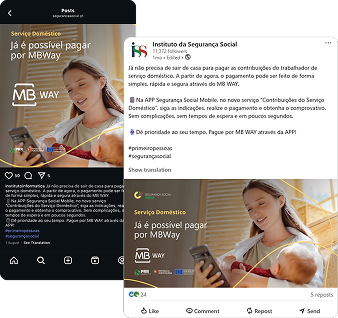
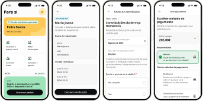

Social Proof & Official Endorsement
The feature’s success was featured across official Instituto da Segurança Social channels (LinkedIn and Instagram), highlighting the project as a benchmark for public sector digital transformation.


This project brought the ability to generate and pay domestic service employer contributions directly through the mobile app, introducing MB WAY as a payment method. It was the first Social Security functionality to support MB WAY within the mobile app, extending a payment flow that previously required the desktop platform or in-person visits.
The project sits within a broader modernization initiative funded by Portugal's Recovery and Resilience Plan (PRR), which aims to digitize and simplify citizen interactions with Social Security.
The decision to prioritize this flow came from two converging signals: a growing share of users accessing the platform through the mobile app rather than the desktop site, and a broader shift in citizen behavior toward smartphone-first usage, with a portion of users having limited or no access to a computer at all.
Domestic employers were a user group with limited payment options on mobile. Without a payment method suited to how they already used their phones, they were forced back to desktop or in-person channels. MB WAY was the natural choice: it is the most widely used mobile payment method in Portugal, and it matched the profile of users the app was already attracting.
Immediate adoption with 6,447 payments in Month 1, scaling to 7,473 in Month 2.
Organic usage growth following the official feature release.
First instant mobile payment service integrated into the Social Security ecosystem.
The introduction of MB WAY for domestic employer contributions resulted in immediate user uptake, proving that removing payment friction directly drives compliance:
6,447 payments processed immediately upon release.
7,473 payments (+15.9% MoM growth), confirming sustained habit adoption.
The feature’s success was featured across official Instituto da Segurança Social channels (LinkedIn and Instagram), highlighting the project as a benchmark for public sector digital transformation.

I was responsible for the end-to-end UX/UI design of the flow, from interface design and information architecture to usability research and content design. I worked within the app's existing design system (built in Flutter) and partnered closely with the development team through delivery, given that MB WAY's real-time confirmation behavior had direct technical implications.
The full journey covers two stages:
The employer reviews and generates the payment document for their domestic employee's contributions.
The employer selects MB WAY as the payment method, confirms the payment on their phone, and receives confirmation back on the platform.
Research effort was not distributed evenly across the flow, and this was an intentional trade-off worth being transparent about.
Domestic employers are a small, dispersed user profile, which made recruitment for dedicated usability testing impractical within the project's timeline. Design decisions in this stage were based on consistency with the platform's existing design system, established business rules for how contributions are calculated and displayed, and prior usability patterns already validated elsewhere in the platform. No informal user contact was available for this stage either, which is a limitation I acknowledge directly rather than working around.
This stage received a dedicated research effort, run in two rounds at the Social Security office.
Moderated in-person usability testing on a navigable Figma prototype, followed by a card sorting exercise to understand users' own mental model of the ideal flow sequence.
6 participants per session, recruited on-site among citizens who had already used the platform and had prior experience with MB WAY on other services. Sessions were recorded and observed remotely by other team members.
Two competing technical solutions were tested for the payment confirmation screen:
Real-time feedback on the platform as soon as the user accepts or declines the payment on their phone.
No real-time feedback; confirmation arrives later through a message.
The results were clear. Solution B scored a 'high severity' usability issue: users struggled to understand whether their payment had gone through and had to actively search for confirmation. Several participants voiced a direct preference for real-time feedback, referencing their experience with other MB WAY-enabled services as the expectation baseline. Solution A, by contrast, was well understood and positively received across the sample.
This finding shaped a technical decision, not just a visual one. Real-time feedback required working closely with the development team to confirm it was achievable within the platform's current technical constraints, and it became a requirement rather than a nice-to-have.
The card sorting exercise also surfaced a secondary insight: when asked to build their own ideal sequence, most participants left 'document issuance' out of the flow entirely, focusing instead on checking amounts, paying, and confirming. This points to a longer-term simplification opportunity beyond the current scope, which I flagged for future iterations rather than trying to solve within this delivery.
A second round of usability testing, aimed at a narrower user profile (citizens who had already made payments through the platform), did not yield usable results: only one participant could be recruited in six hours of on-site recruitment, against a target of five. Rather than draw conclusions from an insufficient sample, this was documented as a methodology limitation, with a recommendation to use a pre-recruited panel of digital-savvy citizens for future studies instead of on-site guerrilla recruitment. I see this as good practice, not a failure: knowing when data isn't strong enough to act on is part of the job.
Validated directly against user expectations and industry patterns, and delivered in partnership with development despite technical constraints.
On the document issuance screen (bank transfer, Multibanco, MB WAY, in-person), which tested well with all participants and required no rework.
Allowing users to pay with either their registered phone number or another one, which addressed a real behavior observed in testing, where users sometimes pay on behalf of a family member.
Given that MB WAY's confirmation behavior depended on backend and third-party integration constraints, this was not a flow I could finalize in isolation. Usability findings were shared directly with the development team to inform technical feasibility discussions, particularly around the real-time feedback requirement. Design decisions for the contribution generation stage, where no dedicated research existed, were validated against business requirements and design system consistency in collaboration with the product team.
This project is a useful example of prioritizing research effort under real constraints rather than treating every screen equally. The MB WAY payment step carried the highest risk, since it was a new interaction pattern with technical dependencies, and it received the deepest research investment as a result. The contribution generation step relied on system consistency and business rules where dedicated research wasn't feasible given recruitment constraints for a narrow user profile.
I also see value in being transparent about the recruitment challenges faced during a second testing round. Rather than stretching a single participant's feedback into a conclusion, the team documented the limitation and proposed a better-suited methodology for future studies instead of on-site guerrilla recruitment. That kind of judgment (knowing when a research effort didn't work and adjusting course rather than forcing a narrative) is something I'd rather show directly than paper over.